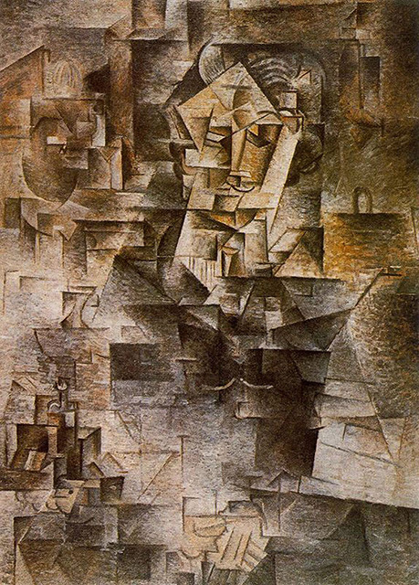

The Actor
Pablo Picasso
Picasso painted The Actor over another painting, because he could not afford new canvases at the time. He created the painting over the winter of 1904–1905, at the age of 23.
View Details
|

Family of Saltimbanques
Pablo Picasso
Family of Saltimbanques(La famille de saltimbanques) is a 1905 painting by Pablo Picasso. It is considered the masterpiece of Picasso's circus period.
View Details
|

Portrait of Daniel-Henry Kahnweiler
Pablo Picasso
In 1907 Picasso joined an art gallery that had recently been opened in Paris by Daniel-Henry Kahnweiler. Kahnweiler was a German art historian, art collector who became one of the premier French art dealers of the 20th century.
View Details
|